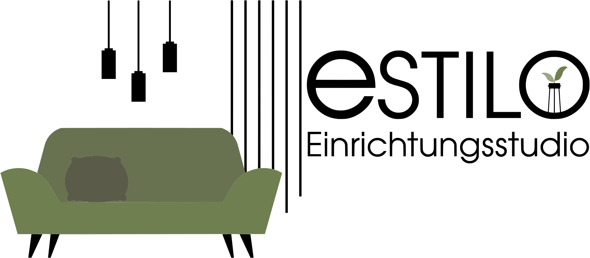

Räume, die
zu Ihnen passen.
Polstermöbel, Betten, Schränke und Esszimmer, ausgesucht und abgestimmt von Ebru Filiz. Am Garnmarkt 17 in Götzis.
Beratung anfragen
Polstermöbel, Betten, Schränke und Esszimmer, ausgesucht und abgestimmt von Ebru Filiz. Am Garnmarkt 17 in Götzis.
Beratung anfragen